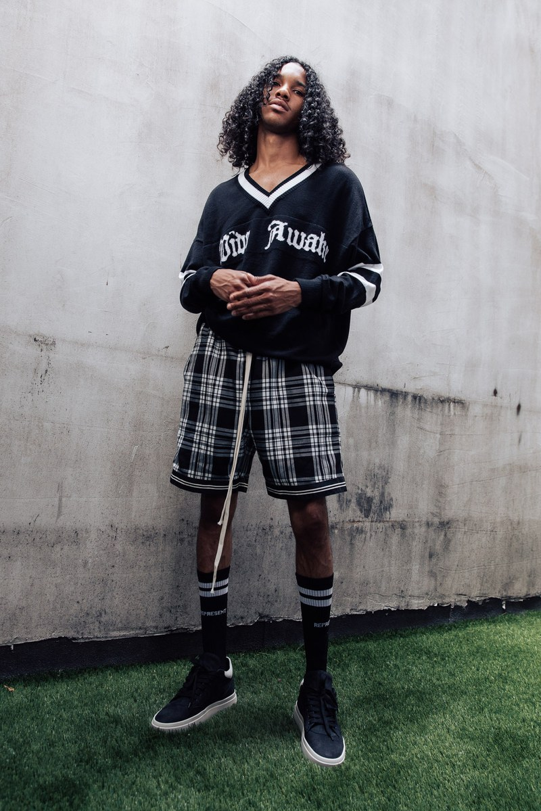

Inside the Anything-Goes World of Instagram Fast-Fashion
Forget the runway-copying conglomerates. The new breed of fast-fashion designer can turn a social-media trend into affordable clothing in the blink of an eye. Which is exactly as cool—and as ethically complicated–as it sounds.
After the #menswear boom of the mid-to-late aughts, guys began looking in the mirror at their chambray shirts, raw selvedge denim and moc toe boots and wondering what was next for their sartorial lives. It wasn't long before they were trading in Yuketen for Yeezy, Ralph Lauren for Raf Simons, and A.P.C. for SLP. But swapping heritage gear for high-fashion looks put pressure on their wallets. Fast-fashion retailers like Zara and H&M were there to give them the trends they craved at a fraction of the cost (and often testing the boundary between "inspired by" and outright ripped off in the process). As menswear became more like womenswear—more driven by “it” items from season to season—guys started looking for new ways to keep up with the revolving door of trends.
The times are changing once again. Interest in fast-fashion is, for the first time, waning. In the first quarter of this year, H&M had their first monthly sales drop in nearly four years, and Zara parent company Inditex SA saw profitability shrink to an eight-year low. They attribute these strains to divergent spending habits and the rise of competition, but it's also coming from the ground up—via young, independent, hungry labels that have used social media to attract young, trend-hungry customers. These brands might not categorize themselves as fast-fashion, but despite their relatively modest sizes, they understand the importance of instant gratification to their style-savvy, cost-cognizant audience. And like their more corporate competition, brands like Represent, KNYEW, and MNML have gotten popular by flipping the hottest current trends into instantly-available items, while using social media and YouTube to reach new customers. But to the designers giving the inspiration, like Fear of God’s Jerry Lorenzo, some of these new-age fast-fashion brands are more like imitators than actual designers.
But to the designers giving the inspiration, like Fear of God’s Jerry Lorenzo, some of these new-age fast-fashion brands are more like imitators than actual designers.
